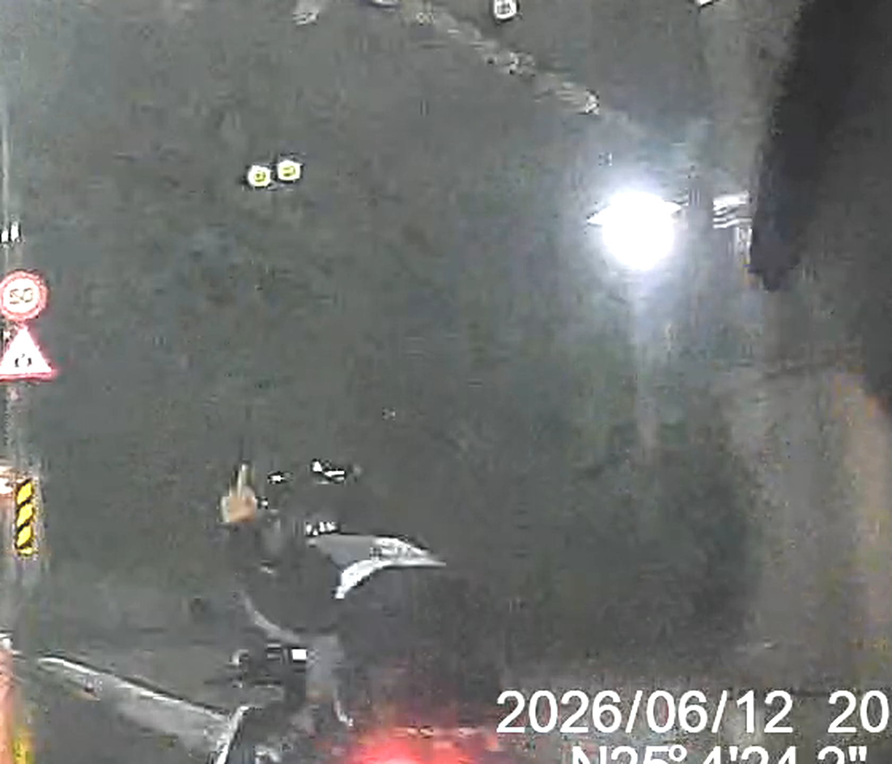
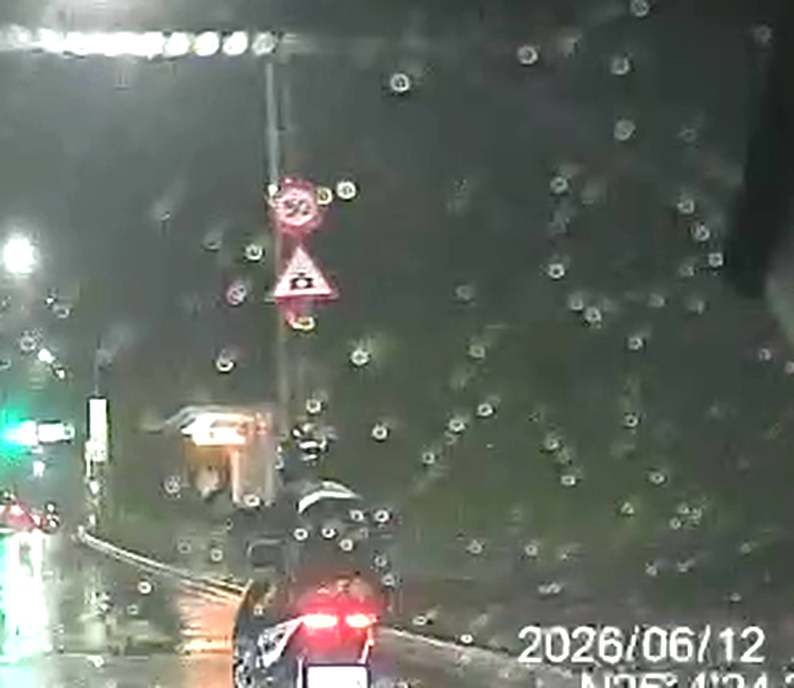
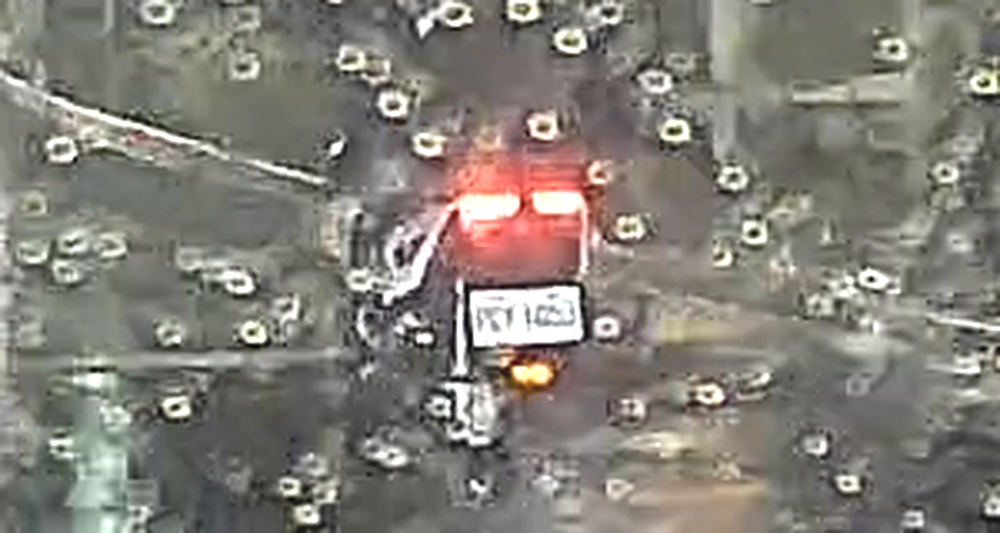
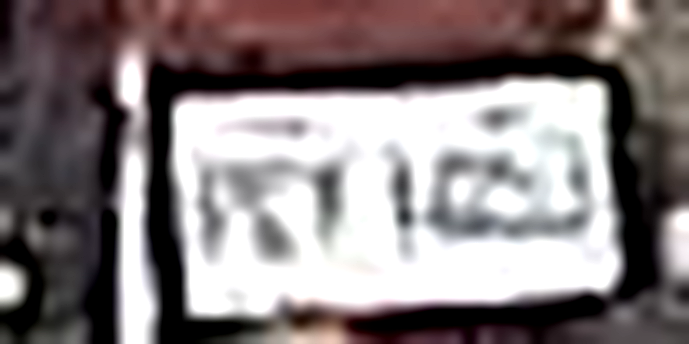
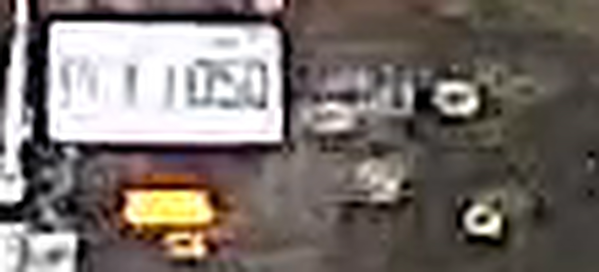
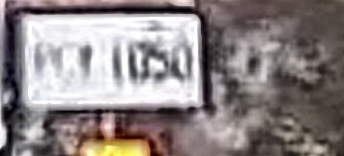

| 事件 | 機車貼身超車並對後車比中指 |
| 時間 | 2026/06/12 20:58:43 – 20:59:30（行車記錄器時間戳） |
| 地點 | GPS：N25°4'24.0"，E121°38'19.2"（影片浮水印） |
| 對象車牌 | PCT-1050（普通重型機車，白牌；判讀說明見下方） |
兩段為同一支影片於 30 秒處無損分割（影像串流原樣複製，未重新壓縮）。原始含音訊檔案由檢舉人留存，可隨時提供。






車牌號碼由原始 1440p 影片第 17.5–20 秒連續畫面逐幀放大判讀：字母「PCT」與數字「1050」於多個獨立畫面一致（首字母 P 如有疑義，次候選為 R）。比中指手勢（17.2 秒）與車牌畫面（17.5–20 秒）為同一車輛之連續追蹤畫面，無中斷。另：影片末段紅燈停等時，鏡頭正前方之白衣騎士（車牌 NAE-1089）經衣著與車輛特徵比對，確認為無關第三人，非檢舉對象。
本頁僅供承辦員警調閱證據使用，未列入網站索引。